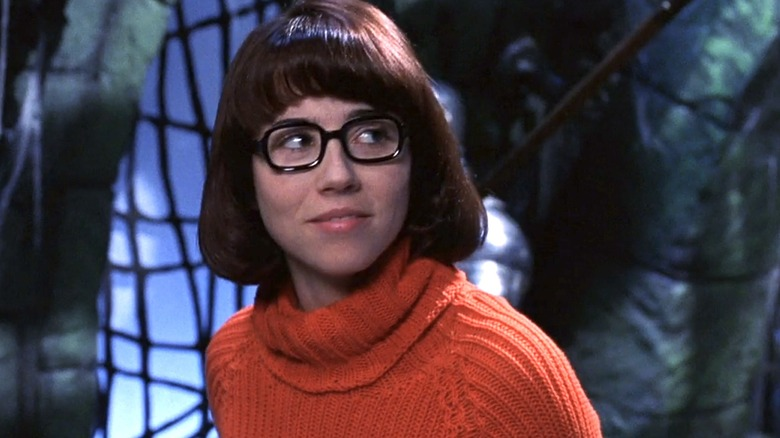
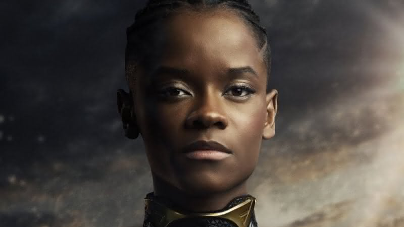
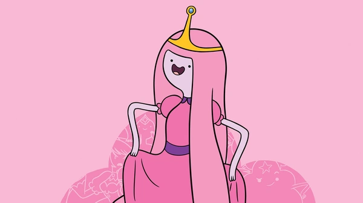
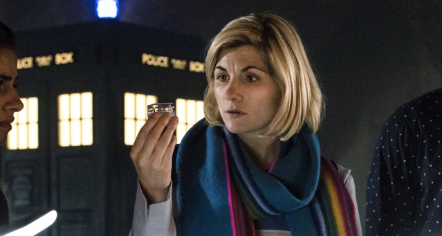

Personagens científicos na cultura popular revelam diferentes facetas do conhecimento e da curiosidade humana. Eles inspiram, provocam questionamentos e refletem os desafios do avanço tecnológico e ético. Por meio dessas figuras, o público se aproxima da ciência de forma acessível, percebendo suas complexidades e impactos no cotidiano. A presença desses personagens mostra como a ciência transcende laboratórios e se conecta com histórias que emocionam e instigam.
Bernadette à esquerda e Amy à direita.
Amy e Bernadette (Big Bang: A Teoria)
Na série Big Bang: A Teoria, Amy Farrah Fowler e Bernadette Rostenkowski-Wolowitz representam duas cientistas brilhantes que ajudam a quebrar estereótipos sobre mulheres na área acadêmica e tecnológica. Amy é neurocientista, apaixonada por estudos sobre o cérebro e dedicada à vida intelectual. Bernadette, por sua vez, é microbiologista com doutorado, atuando na indústria farmacêutica e lidando com responsabilidades de liderança.
Juntas, elas mostram diferentes caminhos dentro da ciência: Amy segue uma carreira voltada à pesquisa, enquanto Bernadette constrói uma trajetória sólida no setor privado. Apesar das personalidades distintas, ambas enfrentam com inteligência e humor os desafios de estarem em espaços majoritariamente masculinos, provando que mulheres podem ocupar qualquer lugar, inclusive no laboratório, no escritório, na sala de aula ou na ficção científica.

Velma Dinkley
Velma Dinkley (Scooby Doo)
Presente nas aventuras da série Scooby-Doo, Velma Dinkley é lembrada por sua inteligência, olhar atento e espírito investigativo. Sempre em busca de respostas, ela observa detalhes que passam despercebidos, conecta pistas e propõe soluções com base na lógica. Sua presença na equipe mostra que o raciocínio e o conhecimento podem ser os maiores aliados em qualquer desafio.
Com um jeito reservado e um gosto natural pela leitura e ciência, Velma inspira pelo exemplo de que a curiosidade é uma força poderosa. Mesmo sem ocupar o centro dos holofotes, ela é peça fundamental para que as histórias avancem, uma figura que ajuda a mostrar, de forma leve e acessível, o valor da mente feminina no mundo das descobertas.

Shuri
Shuri (Pantera Negra)
Shuri é uma jovem princesa do universo Pantera Negra, que se destaca por sua genialidade em ciência e tecnologia. No coração de Wakanda, ela lidera inovações que combinam tradição com avanços futuristas, criando soluções que impactam seu povo e o mundo. Sua conexão com a ciência vai além dos laboratórios: é uma expressão de cuidado, proteção e visão de futuro.
Com criatividade e coragem, Shuri representa uma nova geração de cientistas, jovens, curiosas e determinadas a transformar o mundo à sua volta. Sua presença na ficção mostra que inteligência e liderança não têm idade nem gênero, e que meninas podem ocupar espaços de destaque na ciência, com autenticidade e imaginação.
Lena Luthor
Lena Luthor (Supergirl)
Lena Luthor, da série Supergirl, é uma personagem marcada pelo seu brilhantismo em ciência e tecnologia. Como uma empresária e pesquisadora, ela enfrenta desafios complexos tanto no laboratório quanto na vida pessoal, sempre buscando usar seu conhecimento para o bem.
Sua trajetória mostra a importância da ética e da responsabilidade no desenvolvimento científico, além de destacar a força da mulher que, mesmo diante de adversidades, mantém o compromisso com a inovação e o impacto positivo na sociedade. Lena representa a possibilidade de equilibrar inteligência técnica com valores humanos, inspirando quem acompanha sua história a valorizar a ciência com consciência e propósito.

Princesa Jujuba
Princesa Jujuba (Hora de Aventura)
A Princesa Jujuba, de Hora de Aventura, é uma personagem que combina liderança com uma paixão por ciência e inovação. Como governante do Reino Doce, ela usa seu conhecimento em química, biologia e invenções para cuidar do seu povo e enfrentar desafios de forma inteligente.
Sua história mostra que ciência pode estar presente de maneiras diversas e criativas, unindo sabedoria, empatia e curiosidade. A Princesa Jujuba inspira a ideia de que o conhecimento científico é uma ferramenta poderosa para transformar realidades e construir um futuro melhor.

13th Doctor | Doutora
Doutora (Doctor Who)
A 13ª Doutora, protagonista da série Doctor Who, é uma personagem que representa inteligência, curiosidade e coragem. Como uma viajante do tempo e espaço, ela enfrenta desafios complexos usando raciocínio rápido, criatividade e conhecimento científico, sempre buscando proteger vidas e entender o universo.
Sua figura é um exemplo de liderança feminina que combina ciência com humanidade, mostrando que o pensamento crítico e a empatia caminham juntos. A 13ª Doutora inspira a ideia de que o conhecimento, aliado à coragem, pode abrir caminhos para transformar realidades, independentemente do tempo ou lugar.